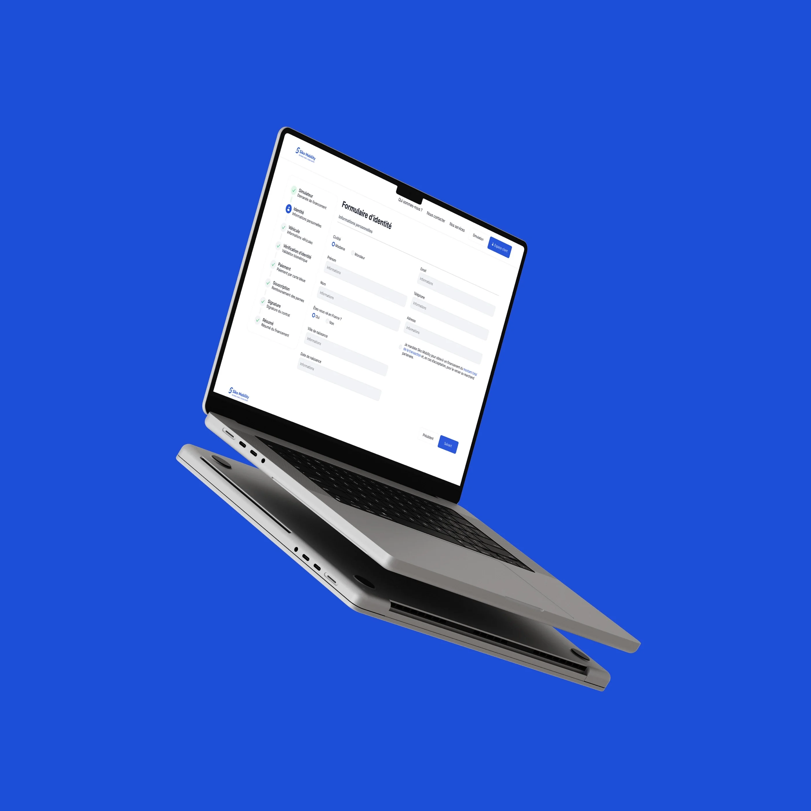
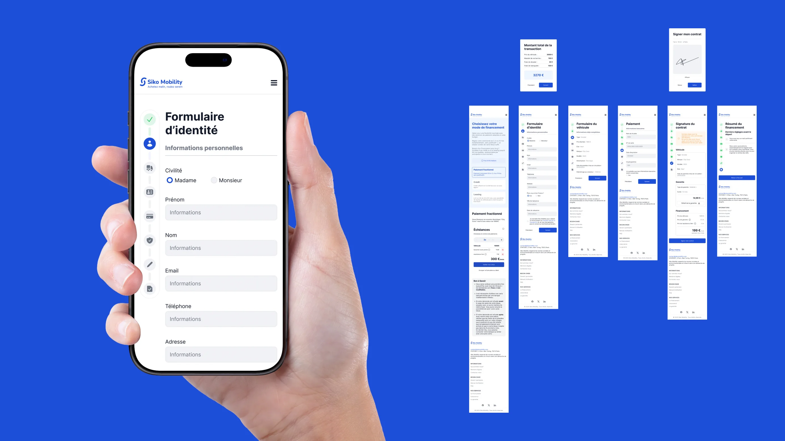

Une expérience pensée pour aller vite, sans jamais perdre l'utilisateur en route. De la simulation à la signature du contrat, chaque écran réduit les frictions d'un parcours de financement de véhicule, sur mobile comme sur desktop.
Contexte et enjeux du financement
Le produit regroupe plusieurs actions clés — simuler, s'identifier, payer, signer — dans une interface souvent consultée en déplacement. L'enjeu : raccourcir le temps d'accès à l'information et à l'action, tout en gardant une lecture claire à chaque étape.
Parcours utilisateur
Tout le parcours vise l'efficacité : le moins de clics possible, aucune étape superflue. Simuler, s'identifier, payer et signer tiennent en six pages et deux pop-ups.
Tableau de bord
Un tableau de bord vertical accompagne tout le parcours pour rassurer et donner une vue d'ensemble. Les étapes validées passent au vert, l'étape en cours est en bleu. Sur mobile, il se réduit à ses icônes pour laisser la place au formulaire, sans rien perdre en lisibilité.
- 01Simulateur
- 02Identité
- 03Véhicule
- 04Vérification
- 05Paiement
- 06Souscription
- 07Signature
- 08Résumé


Boutons et interactions
La couleur principale est réservée aux actions qui font avancer : un repère constant qui trace le chemin à suivre. Le placement suit le sens de lecture, avancer à droite, revenir ou annuler à gauche. Au survol, le fond fonce légèrement et le texte blanc reste blanc, pour éviter tout effet de clignotement.
Pensées pour le tactile, les cases à cocher sont cliquables sur une zone élargie de 4 px, libellé compris : toucher « Madame » ou « Non » suffit, le geste gagne en précision.
Mode sombre
Pas de noir pur sous du texte blanc : ce contraste trop fort fatigue l'œil sur la durée. Le mode sombre pose plutôt un fond gris adouci, plus foncé que le blanc du mode clair, et garde le texte en noir. Moins d'éblouissement, une lisibilité intacte.
Design system
Un même système de composants, décliné du desktop au mobile : hiérarchie visuelle nette, formulaires simplifiés, et des écrans pensés pour un usage à une main.
